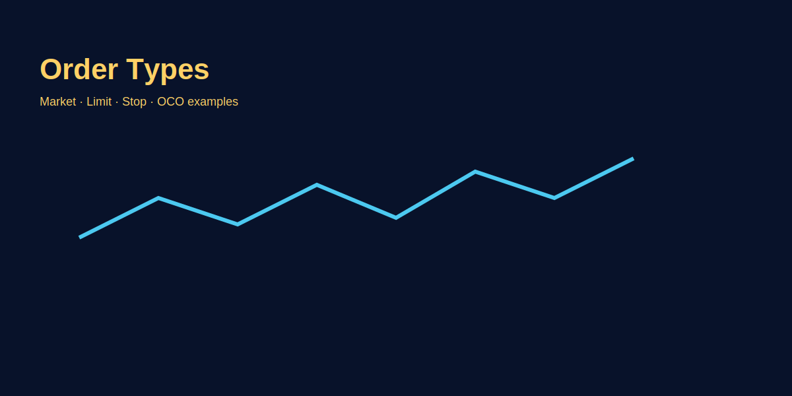

Order Types in Forex
Problem-based introduction
Order type nahi samjhe toh galat price pe entry ya exit ho sakta hai. Yeh article simple Hinglish mein market, limit, stop, stop-limit aur advanced orders explain karega with GOLD examples.
Order Types Explained
1. Market Order (Instant Execution)
Definition: Buy/sell immediately at current market price. Broker fills order at best available bid/ask.
Use case: When speed > price precision. Emergency exits, breakout entries where you need instant execution.
GOLD example: Price breaks 2025.00 resistance; you hit "Buy Market" → fills at 2025.20 (0.2 slippage). You're in immediately.
Pros: Guaranteed execution (order always fills). Fast — critical for stop-loss exits.
Cons: Slippage during volatility (NFP, FOMC). Wide spreads = bad fills. No control over exact entry price.
Best for: Stop-loss orders (SL must execute!), breakout scalps, emergency flat positions.
2. Limit Order (Wait for Better Price)
Definition: Order executes only at specified price or better. Buy limit = buy at/below target; Sell limit = sell at/above target.
Use case: Planned entries at support/resistance, profit-taking at targets.
GOLD example: Price at 2030.00, support at 2020.00. Set Buy Limit 2020.00 → order waits. If price touches 2020.00, fills at 2020.00 or better (2019.80 possible). If price never reaches 2020.00, order expires unfilled.
Pros: No slippage (you get price you want or better). Good for low-liquidity conditions. "Set and forget" — no need to watch screen.
Cons: May not fill if price doesn't reach limit. Miss trade if price reverses before touching limit (e.g., stops at 2020.50, reverses up).
Best for: Range trading (buy at support, sell at resistance), swing entries, profit targets (take-profit orders).
3. Stop Order (Trigger Market Order)
Definition: Becomes market order when price reaches stop level. Buy stop = buy above current (breakout); Sell stop = sell below current (breakdown/stop-loss).
Use case: Stop-loss protection, breakout entries above resistance.
GOLD example (stop-loss): Long at 2020.00; set Sell Stop 2015.00. If price drops to 2015.00, stop triggers → market sell order executed → fills at ~2015.00 (or 2014.80 with slippage). Loss capped.
GOLD example (breakout): Resistance 2030.00; price at 2025.00. Set Buy Stop 2030.50 (above resistance). If price breaks 2030.50, triggers market buy → you enter breakout momentum.
Pros: Guaranteed execution (once triggered). Essential for stop-loss — protects capital. Simple to use.
Cons: Slippage possible after trigger (especially news/gaps). May trigger prematurely on wicks (price touches 2015.00, immediately reverses; you stopped out at low).
Best for: Stop-loss orders (must execute to protect account), breakout entries, trailing stops.
4. Stop-Limit Order (Trigger Limit Order)
Definition: When price reaches stop level, triggers limit order (not market). Two prices: stop (trigger) + limit (max execution price).
Use case: Control slippage on stop-loss, but accept risk of no fill.
GOLD example: Long at 2020.00; set Sell Stop-Limit: Stop 2015.00, Limit 2014.50. If price hits 2015.00, limit order placed at 2014.50. If market sells down to 2014.50, fills. If price gaps through 2014.50 (jumps 2015 → 2013), order unfilled — you're stuck in losing position.
Pros: No slippage beyond limit. Control worst-case exit price.
Cons: May not fill during fast moves/gaps. Risk: stop triggered but no exit = unlimited loss potential. Complex for beginners.
Best for: Advanced traders avoiding slippage in illiquid markets. NOT recommended for critical stop-losses (use market stop).
5. OCO (One-Cancels-Other) Order
Definition: Two orders linked; if one fills, other cancels automatically. Common: stop-loss + take-profit bracket.
GOLD example: Long entry 2020.00. Set OCO: Sell Limit TP 2030.00 + Sell Stop SL 2015.00. If TP hits 2030.00 first, SL cancels. If SL hits 2015.00, TP cancels. Only one exits.
Best for: Swing trades where you set trade and walk away. Automated risk management.
6. Trailing Stop Order
Definition: Stop-loss that moves with price in profit direction; locks gains while giving trade room.
GOLD example: Long 2020.00; set 10-pip trailing stop. Price → 2025.00; trailing stop auto-adjusts to 2015.00 (10 pips below high). Price → 2030.00; stop → 2020.00. If price reverses to 2020.00, exits — profit locked.
Best for: Trend-following, capturing big moves without early exit.
Order Type Selection Matrix
| Scenario | Best Order Type | Why |
|---|---|---|
| Emergency stop-loss | Market Stop | Guaranteed exit; slippage acceptable vs unlimited loss |
| Swing entry at support | Buy Limit | Wait for pullback; no slippage; set and forget |
| Breakout entry | Buy Stop (market) or Market Order | Speed critical; accept slippage to catch momentum |
| Range scalp profit target | Sell Limit TP | Auto exit at resistance; no babysitting |
| Trend-following runner | Trailing Stop | Lock profits; let winner run; auto-adjust |
| Swing trade set-forget | OCO (Limit TP + Stop SL) | Bracket trade; one fills, other cancels |
| Illiquid exotic pair SL | Stop-Limit (advanced only) | Avoid 10-pip slippage; risk: may not fill |
Practical Playbook: GOLD Scalp (London Open)
Setup: GOLD consolidates 2020–2025 range overnight. London open (1:30 PM IST) breakout expected.
Order execution plan:
- Pre-open: Set Buy Stop 2025.50 (above range high). If breakout, auto-enter.
- Simultaneously: Attach OCO: Sell Limit TP 2035.00 (10-pip target) + Sell Stop SL 2020.00 (5-pip SL).
- Execution: Price breaks 2025.50 → Buy Stop triggers market buy at 2025.60 (0.1 slippage). OCO activated.
- Outcome A: Price hits 2035.00 TP → Sell Limit fills at 2035.00; SL auto-cancels. +9.4 pips net.
- Outcome B: False breakout; price drops to 2020.00 → Sell Stop triggers market at 2019.90 (0.1 slippage). TP auto-cancels. -5.7 pips loss.
Risk:Reward: 5.7 pip risk : 9.4 pip reward = 1:1.65. Acceptable scalp R:R.
Advanced: Partial Profit Orders
Strategy: Scale out winners at multiple targets; let runner work.
Example: Long 0.2 lot GOLD at 2020.00; SL 2015.00 (5 pips = $10 risk on 0.2 lot).
- TP1: Sell Limit 0.1 lot at 2025.00 (5 pips = $5 profit). Locks 1:1, position now 0.1 lot.
- TP2: Sell Limit 0.05 lot at 2030.00 (10 pips = $5 more). Cumulative +$10.
- TP3: Trail 0.05 lot with 10-pip trailing stop; let it run to 2040+ if momentum continues.
- SL adjustment: After TP1 hits, move SL to breakeven 2020.00 on remaining 0.1 lot. Now risk-free.
Psychology: Partial profits reduce fear of "giving back gains"; runner captures big moves without early exit regret.
Broker-Specific Order Quirks
- MT4/MT5: Stop-limit called "Stop Limit" order. OCO requires EA/script (not native). Trailing stop native but doesn't work if platform closed (VPS needed).
- cTrader: Native OCO ("Bracket Orders"). Trailing stop server-side (works even if app closed). More intuitive UI.
- Market makers: May "stop hunt" — trigger your SL then reverse. Solution: place SL 5–10 pips beyond obvious levels (not tight on support).
- ECN brokers: Limit orders join order book; may get filled at better price (price improvement). Stop orders trigger during spreads; slippage varies.
Common Order Mistakes
- Stop-limit for critical SL: NFP news → price gaps through limit → stop unfilled → 100-pip loss instead of 10. Use market stop for SL always.
- Market orders during news: Spread widens 0.3 → 3.0 pips; slippage 5 pips. Wait 2 min after news for spread normalization.
- Limit too far from price: Buy Limit 2000.00 when price 2025.00; forgets order → weeks later price dumps to 2000, unexpected fill at market bottom.
- Forgetting pending orders: Multiple Buy Stops at various levels; all trigger during volatility → overleveraged. Use OCO or cancel old orders.
- Tight trailing stops: 5-pip trail on GOLD (ATR 50 pips) → stopped out by noise every time. Minimum 15–20 pip trail for GOLD intraday.
Image-based examples (mandatory)
Common Mistakes
- Using stop-limit during highly volatile news where fills are needed.
- Placing market orders with large size during low liquidity leading to slippage.
- Setting limit orders too far from current price and forgetting them — unexpected fills weeks later.
- Not canceling old pending orders; multiple triggers during volatility → overleveraged.
- Tight trailing stops (5 pips on GOLD with 50-pip ATR) — stopped by noise constantly.
Pro Tips
- Use limit entries for planned entries; use market stop-loss for guaranteed exit in emergencies.
- Test order behaviour on your broker's demo to see how stop and limit orders are executed.
- OCO discipline: Always bracket swing trades with TP + SL OCO; prevents emotional meddling mid-trade.
- Partial profit script: Pre-program 50% close at 1R, 50% trail for 2R+ — removes emotion from exit decisions.
- Stop placement rule: SL 5–10 pips beyond obvious levels (support/resistance/round numbers) to avoid stop hunts.
- Order audit weekly: Review pending orders every Friday; cancel outdated setups to avoid ghost fills.
Risk Warning
Order types behave differently across brokers; test them to avoid unexpected fills and slippage.
SEO FAQs
- 1. Market order kya hota hai?
- Immediate execution at current available price. Best for stop-loss (guaranteed exit) or breakout entries where speed > precision. Cons: slippage during news/volatility.
- 2. Stop-limit vs stop-market ka difference?
- Stop-market triggers market order (guaranteed fill, possible slippage). Stop-limit triggers limit order (controls slippage but may not fill if price gaps). Use stop-market for critical SL.
- 3. Kaunsa order newbies ke liye safe hai?
- Market stop for SL (always execute), Limit for planned entries (better fills), OCO for swing trades (auto TP+SL). Avoid stop-limit until advanced.
- 4. Limit order kab use karein?
- When you want specific price or better: swing entries at support/resistance, profit targets, low-slippage fills. Set and forget — waits for price to come to you.
- 5. Trailing stop kaise kaam karta hai?
- Auto-adjusts SL as price moves in profit direction. Example: 10-pip trail on GOLD long; price rises 2020→2030, SL auto-moves 2015→2025. Locks profit, lets winner run.
- 6. OCO order ka benefit kya hai?
- Bracket trade with TP + SL; one fills, other cancels automatically. No babysitting needed. Perfect for swing trades — set and forget until one side triggers.
- 7. News trading mein kaunsa order best?
- Avoid market orders 2 min before/after news (spread widens 5x). Use limit orders pre-placed at key levels, or wait 5 min post-news for spread normalization then market order.
- 8. Buy Stop aur Buy Limit ka difference?
- Buy Stop = buy above current price (breakout entry). Buy Limit = buy below current price (pullback entry). Stop triggers when price rises; Limit waits for price to fall.